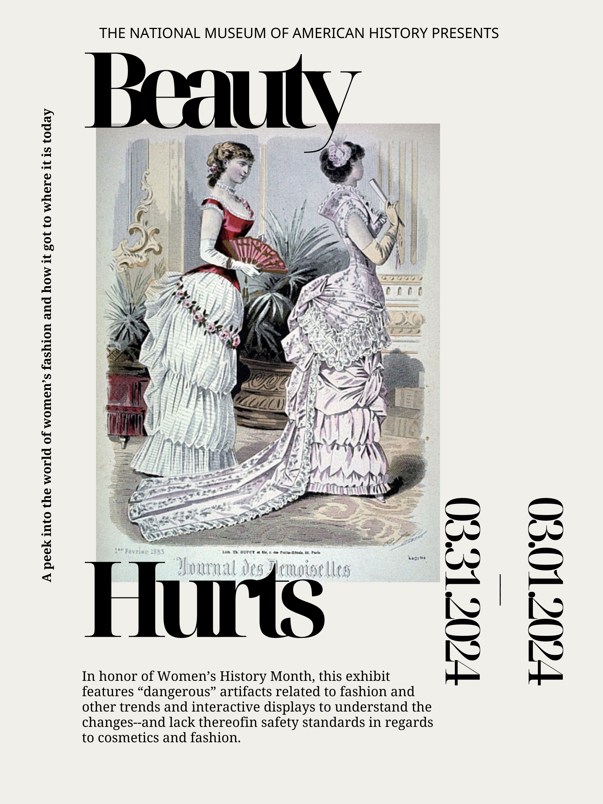

Introductory Essay
Constricted by corsets, constrained by culture
Sydney Salinda
Women's History Month isn't just about admiring perfectly coiffed portraits. It's a call to examine the societal forces that have shaped women's lives, particularly the often-suffocating grip of unrealistic beauty standards. This exhibit explores the historical context of these standards in 19th and 20th-century America, focusing on the sometimes dangerous lengths women went to in pursuit of the ideal form.
The era was a paradox of beauty and constraint. Elaborate corsets, for instance, cinched waists to an unhealthy degree, causing difficulty breathing and internal organ damage. While achieving the coveted hourglass figure, women sacrificed comfort and health in the name of beauty. Fashion itself could be a hazard. Ostrich feather hats, a symbol of status, were highly flammable and a constant worry around open flames, a common feature in gas-lit homes. The pursuit of beauty could literally put a woman's life at risk.
Even seemingly innocuous beauty products harbored hidden dangers. Mercury-based treatments were used to lighten skin, a dangerous practice that could lead to mercury poisoning, causing neurological damage and even death. These products not only endangered women's health but also reinforced the harmful idea that natural skin tones were somehow undesirable.
However, women have always resisted these rigid definitions. The rise of the Rational Dress Movement in the late 19th century challenged the impracticality and health risks of restrictive clothing. Elizabeth Cady Stanton and Amelia Bloomer influenced women throughout the Progressive Era, despite advertisements, flyers, and other marketing tactics for dangerous products typically led by men. Women also opted for looser garments that allowed for greater mobility and physical activity.
Women's History Month is a chance to rewrite the narrative. We celebrate women who defied expectations, not through their appearance, but through their accomplishments. From athletes who pushed boundaries to artists who challenged the status quo, history is filled with women who redefined success on their own terms. Continue the conversation!